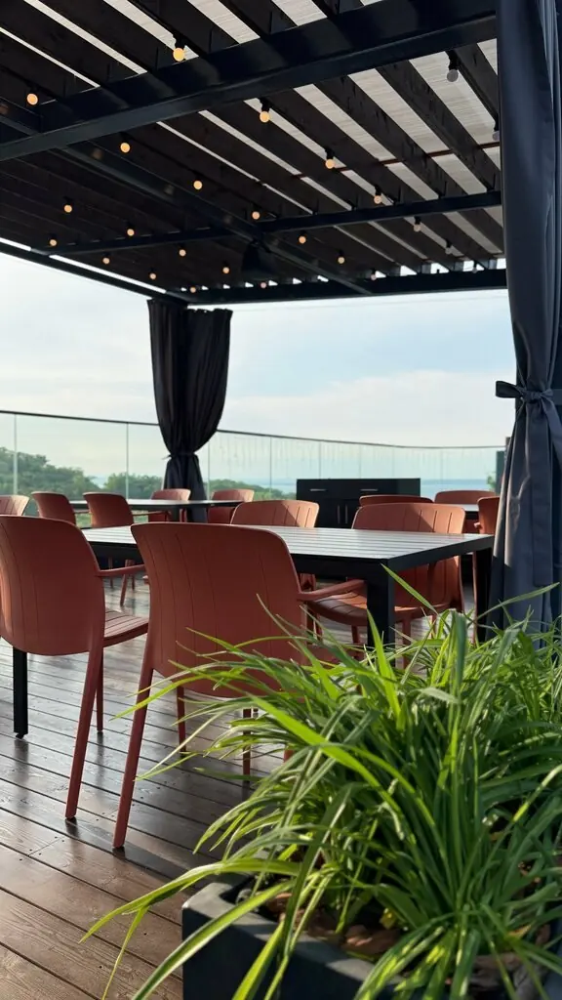
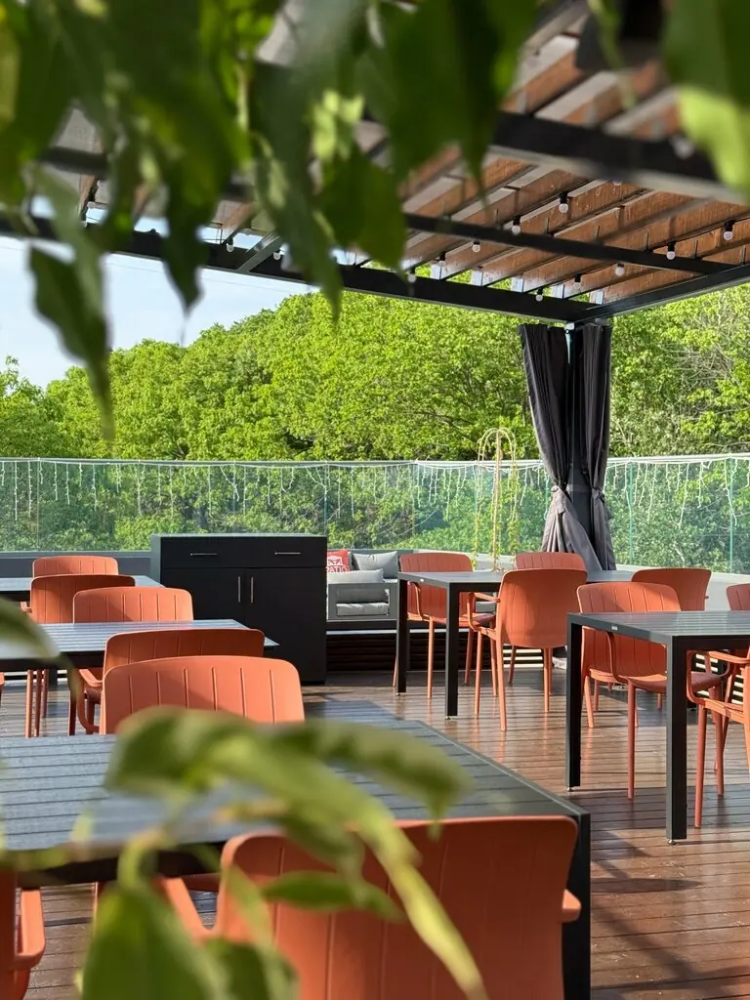
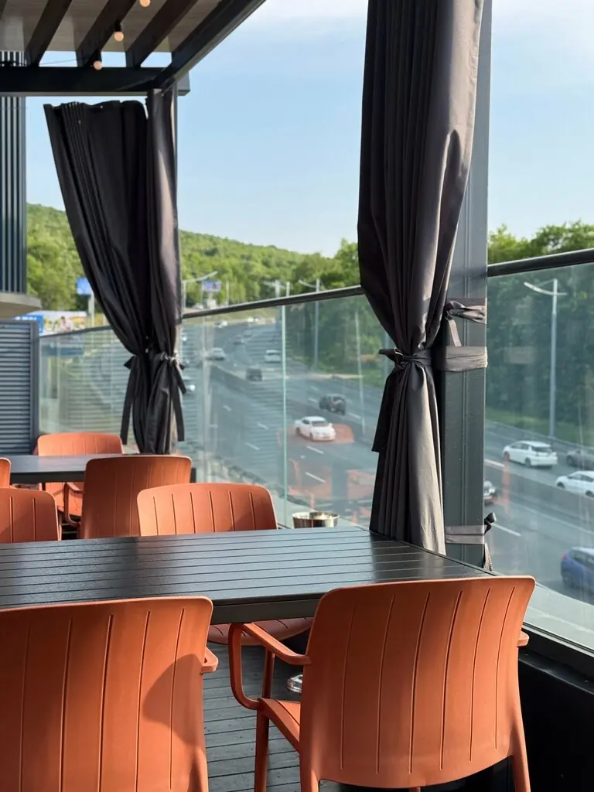
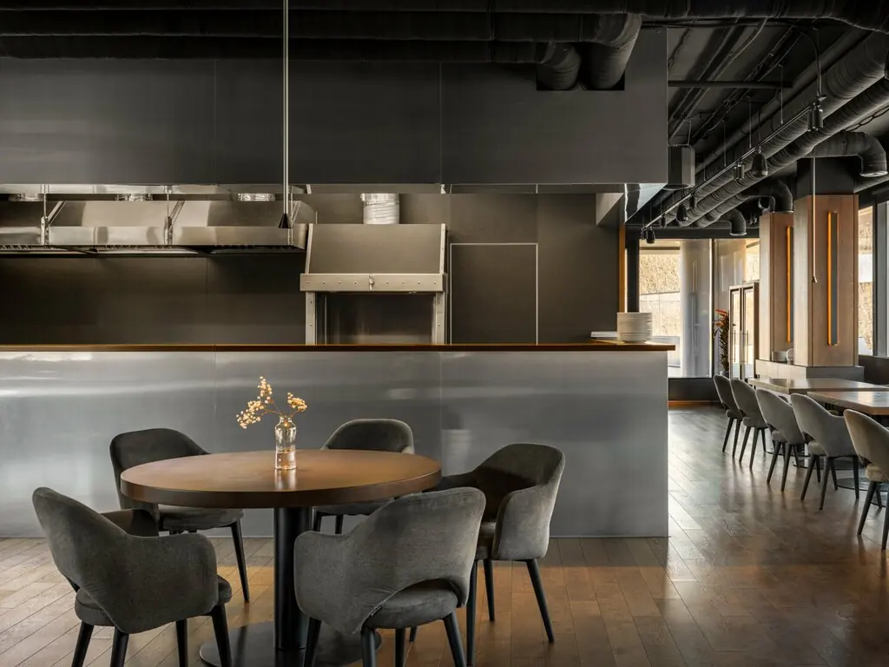

Владивосток+7 984 199-18-88
Винотерра
Стейк-хаус с большой винной картой и террасой, с которой видно зелень и город. Рассказывайте, как вам пожарить.
4,4 · 63 оценки
Какую прожарку?
RareMedium rareMediumMedium wellWell
Рибай1 720 ₽
Тендерлойн1 900 ₽
Стриплойн1 500 ₽
Вагю А-45 800 ₽
Цены с Яндекс Карт, вес и сезонные позиции уточняйте у официанта.
Терраса и зал



К стейку
Запечённый гребешок на углях570 ₽
Фаланга камчатского краба с кимчи1 750 ₽
Суточные щи с телятиной790 ₽
Французский луковый суп790 ₽
Томаты с песто и бурратой1 750 ₽
Сырная тарелка1 800 ₽
Рецензенты
Стейки были потрясающие, брали разные виды, по прожарке всё идеально. Винная карта очень обширная.Наталья
Официант помог с выбором мяса и уровнем прожарки. Отдача была очень быстрой.Юрий Суздальцев
Одно из лучших мест во Владивостоке. Высокое качество продуктов, вежливый и внимательный персонал.Аглая Савченко